OLTP vs OLAP
On-line transaction processing（OLTP）
事务的流程较短、语句较少、涉及数据的读写操作（可能写数据的情况会多一些）
一般来说，每个事务对整体数据的影响都很小
存在大量重复性的小事务
On-line analytical processing（OLAP）
事务的流程较长、语句较多、大部分是只读操作
语句中有非常复杂的join操作
大部分用于数据分析的场景
Decentralized coordinator
中心化的协调思想
应用先向主节点（primary node）发送事务开始的请求（begin request）

然后，应用可以去各个节点对数据进行查询

当事务结束以后，应用需要再给主节点（primary node）发送一个commit request的请求
然后主节点（primary node）需要去各个节点判断，事务是否可以在本节点上安全的提交

Observation
但，这种场景下没有讨论如何确保所有的节点都能够成功的提交事务
比如说：
如果单个副节点的提交失败了，该如何处理？
节点直接的通信发生了严重的延迟，该如何处理？（rpc调用延迟过长）
不想等待所有的节点都同意再提交，该怎么处理？（可能有些节点需要很长时间才能够将事务提交）
Important assumption
数据节点分布在全世界，而这里要假设每个节点的DBMS是正常工作的（是善意的），是可控的（是在可以管理的情况下的）
也就是说，数据节点不会被黑客攻击
因此，这里讨论的分布式数据库暂时不考虑拜占庭问题
PS：类似区块链这种场景，可以理解为是一个分布式数据库
但是每个节点的信息是不可靠的（因为每个节点都是由不同的人或机构组成的，互相之间是不可信的）
因此在区块链的场景下，需要更加复杂的共识算法去实现共识机制，去解决拜占庭问题（比如工作量证明等）
Atomic commit protocol
当一个多节点事务完成后，DBMS需要了解各个节点是否都是安全可提交的
因此为了实现分布式数据库中的原子提交，可以使用以下协议去实现：

Two-phase commit
2PC分为两个部分：准备阶段（prepare）和提交阶段（commit）
Prepare
首先接收到应用commit request的节点会变为协调者（coordinator）
而其他的节点会变为参与者（participant）
协调者首先会向参与者发送确认请求，让参与者确认本次事务的修改是否是合理正确的
如果是，就会回复ok
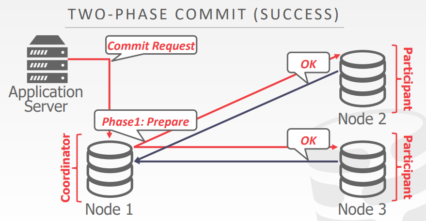但如果不是，那么参与者（participant）就会回复abort，并进入abort阶段
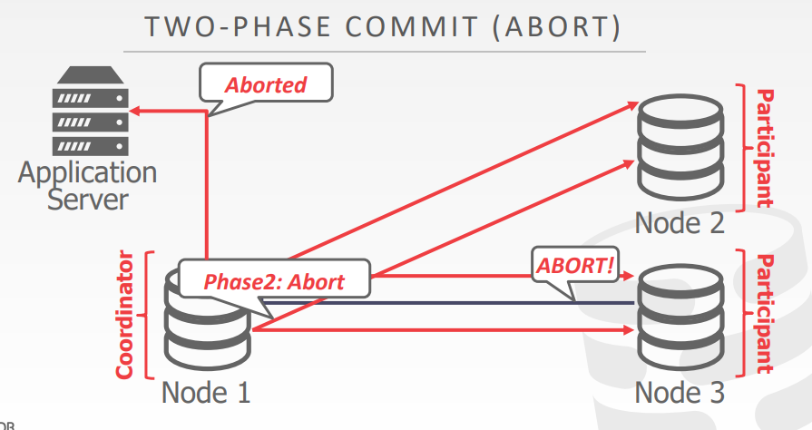Commit
在收到参与者的回复（ok）之后，协调者就明白当前事务在其他各个节点上都是安全可提交的
接着进入commit阶段
此时协调者会再向参与者发送一个commit请求，参与者就会在本地提交当前的事务
提交成功后会回复ok
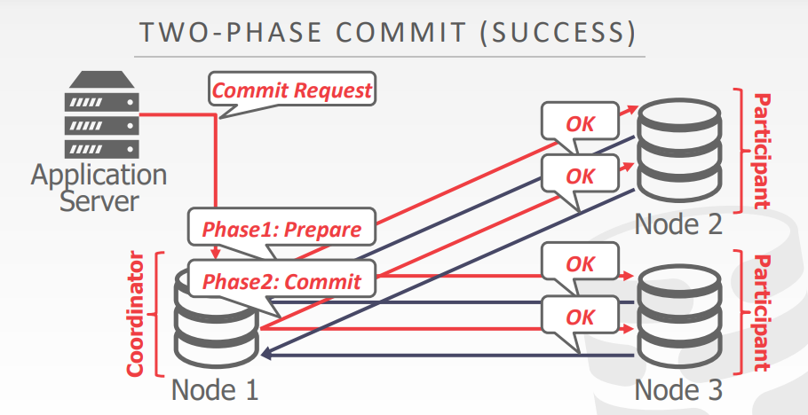此时，事务提交成功，并会给应用层返回信息
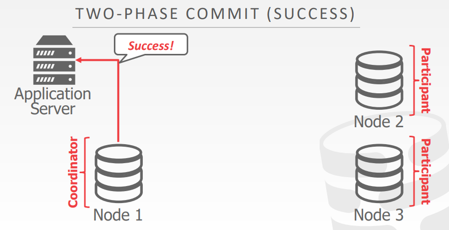Abort
进入abort阶段后，协调者会发送abort请求给参与者
告知参与者事务需要取消回滚
参与者回复ok之后，协调者就会给应用层返回abort请求
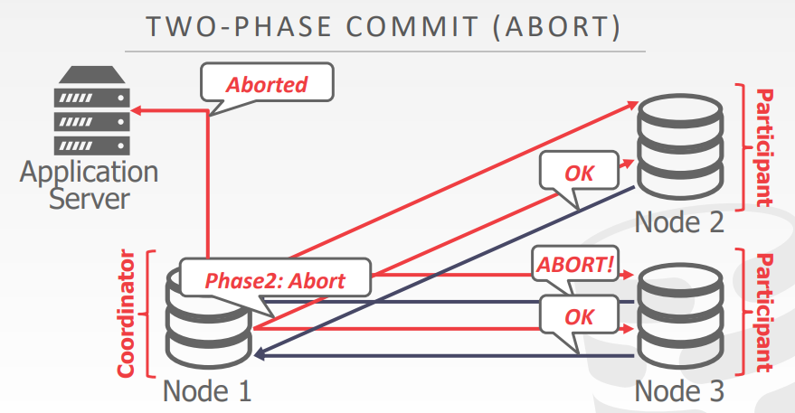Optimizations
2PC的两个优化方向
Early prepare voting
如果已知某个查询语句是事务中的最后一个语句，那么就可以将这个语句和commit request一并发送给coordinator协调者
而不是将语句和commit request分开发送
一并发送后可以提前开始投票，即提前开始prepare阶段
Early acknowledgement after prepare
在prepare阶段收到所有节点的同意的时候，就可以提前告知用户事务commit success
而不是等到commit阶段结束后再告诉用户（有点像异步IO）

但是这种方法也有缺点，比如说返回成功以后集群断电了，就可能造成数据的丢失
question
如果2PC过程中，协调者发生了崩溃，那么参与者该如何处理？
答：有可能此时参与者还在执行着一部分事务，所以此时需要参与者将事务进行回滚
如果2PC过程中，参与者发生了崩溃，那么协调者该如何处理？（或者说发送的请求因为网络等其他原因，导致参与者没有接收到）
答：那么此时，协调者会认为该参与者是不同意该事务的发生的，默认它返回的是abort
Paxos
Paxos或Raft，其实本质上是一个共识机制，或者是一个一致性协议
通过投票机制，取得大部分人的共识，选出一个大部分人都认可的决策
如果一个集群中大部分的参与者（都是正常可用的）都同意某个决定，那么全体成员就都需要执行这个决定
这里的大部分，一般是指一半的参与者
单个事务的Paxos
在Paxos中，分为提议人（Proposer）和接收者（Acceptor）
收到应用commit request的就是提议人
首先，proposer收到应用的commit request，系统就会进入propose阶段
proposer会提出提案，即要将当前的事务提交
acceptor就会评估proposer给出的提案是否可以提交，如果能够提交，就会回复一个agree
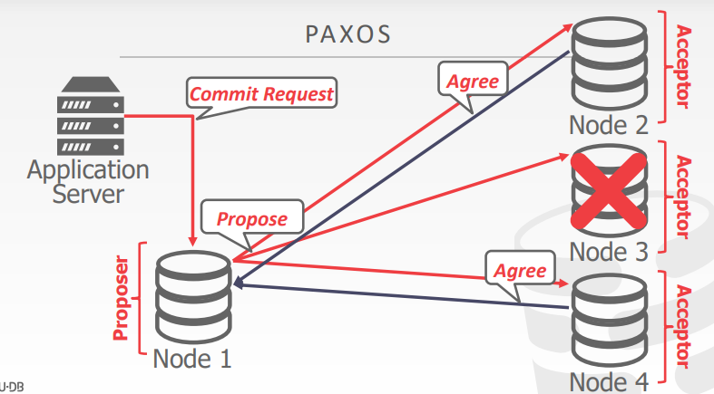在收到acceptor的回复以后，如果有超过一半的acceptor都同意这个提案
接下来就会进入commit阶段
proposer会发指令让所有的acceptor都同意这个提案
最后，acceptor执行完之后，会再给proposer发送一个accept
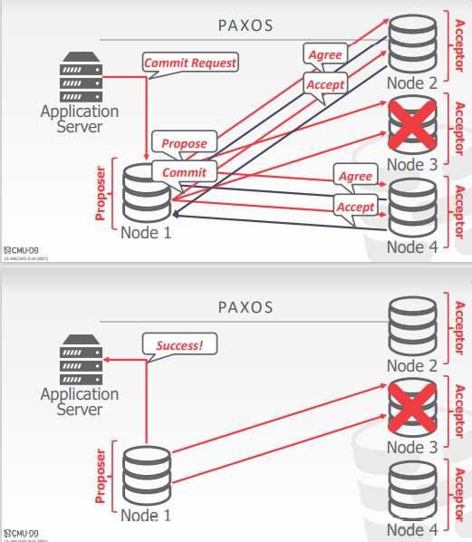面对那些处于崩溃状态的节点（acceptor），proposer会持续不断地向其发送信息
直到该节点接受这条信息
多个事务的Paxos
一开始进来的是事务n，此时的事务n完成了propose阶段
而此时又来了一个事务n+1，开始了它的第一阶段propose阶段
而Paxos为了要实现可串行化，因此就会要将原来的事务n给reject
所以acceptors就会给事务n的proposer一个reject
然后继续原来事务n+1的流程
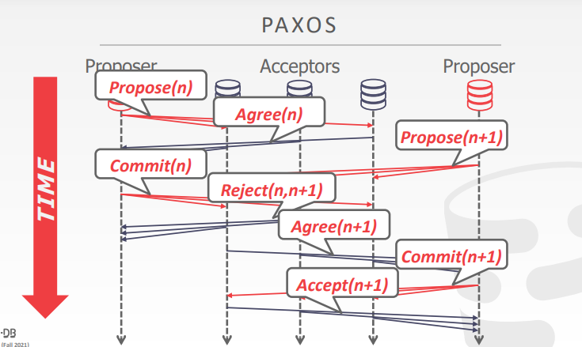其实Paxos更多的是做副本分发的一致性，用于做事务的协调是很少的（基本没有）
Multi-paxos
如果系统内部可以选举出一个单独的proposer，相比Paxos，那么就可以跳过Propose的过程
缺点：如果这个proposer挂了的话，就会导致系统的崩溃
因此，为了维护这个proposer，系统会周期性的维护这个proposer，即每隔一段时间就会选举出一个新的proposer
这种每隔一段时间选取出一个新的leader的机制在Raft中名为租约
2PC vs Paxos
在2PC，如果协调者或是接受者宕机了，整个系统都会无法运作
在Paxos，只要大多数的参与节点不会宕机（指一半），系统都是可以运作的
Replication
Replica configurations
副本的架构
Primary-replica
主备模式
对于数据的操作，一般都需要在主节点上操作
主节点可以在没有原子提交的情况下（指可以只在主节点上操作，不需要多节点协调），通过log的方式将数据分发给备节点
对于只读操作，可以在备节点中进行
如果主节点崩溃了，那么就会在其余的备节点中选举出一个新的节点
主备模式是副本架构中运用最多的一种方式
主节点用于数据的读写
备节点用于做数据的备份、主节点崩溃时选取备节点当主节点、当需要查看线上数据的时候可以用备节点查看
比如说一些小公司，对于数据的分析，很多都是读取备节点上的数据
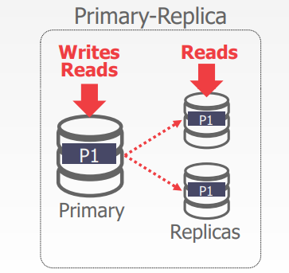Multi-primary
多主模式
任何一个节点都是主节点，因此对于数据的操作可以在任何一个节点上执行
也正因如此，多个主节点之间需要频繁的同步数据，尤其是出现矛盾的时候，更加难以处理
因此需要原子提交协议的支持（多个主节点，2PC提交）
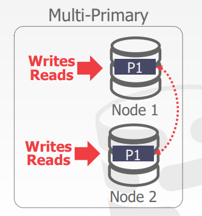
K-safety
需要保证线上的数据始终保持至少有k份
可以理解为这个叫作安全度，也就是说如果线上的数据数量少于这个，就不能够对外提供服务
比如说主备模式中，要始终保持线上的数据有2份
如果少于2份，就必须停止服务（这里可以理解为此时只有1份了，即主节点的数据，那么备节点就没有数据了，相当于备份失效）
Propagation scheme
主节点的数据如何同步到其他节点上
Synchronous
同步（强一致性）
当向主节点提交数据的时候，系统会强制将此时的数据同步到其他节点上（因此会造成延迟）
只有主节点和副节点都提交成功了以后，才会返回给用户（不仅仅是日志要到副节点上，而且副节点还要执行完这个日志才返回）
一般主节点使用log与副节点进行同步（比如mysql的binlog）
缺点：存在时延，需要多个节点一起同步
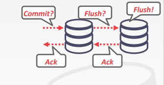Asynchronous
异步（最终一致性）
当主节点操作完数据以后，便立刻返回给用户，表示数据的操作成功了
将数据同步到备节点上的操作，后续再执行
缺点：如果后续数据同步的过程中，DBMS宕机了，就会造成数据的丢失
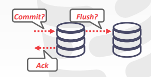Mysql使用的是半同步半异步的方案：
主节点将日志传给备节点，然后当日志传输成功后，就返回给主节点，留着备节点慢慢执行
Propagation timing
数据传输的时机问题
Continuous
主节点不断地将数据传播给备节点，用户发一条SQL，主节点就发一条SQL给备节点
最后还需要将commit/abort的信息发送给备节点
缺点：如果发生了回滚，那么主备节点都需要一起回滚（复杂度高）
On commit
平常的时候不会将操作SQL传给备节点
只有事务真正提交的时候，才会将SQL传给备节点
优点：回滚上不会有很大问题；不会浪费时间在发送失败事务的日志记录上
缺点：最后事务提交的时候，需要发送日志，存在时间上的开销
并且，如果事务的SQL太多的话，主节点本地就需要存储大量的日志，浪费空间
Active vs Passive
Active-active
主备同步的时候，主节点传递的是SQL，因此SQL还需要在备节点上再执行一遍
即SQL需要在每个节点上单独执行一遍
最后，还要检查事务是否在每个副本中都得到了相同的结果
缺点：SQL会被不同的节点重复执行
Active-Passive
主备同步的时候，主节点先将SQL执行一遍
记录到底需要修改哪些数据，并记录成日志
然后再将日志传递给备节点
PS：此前说的数据，都是数据未分片的例子
而实际上，此前的做法也是可以用于数据分片的情况的
比如说主备模式，
节点A可以做数据1的主数据库、数据2的备数据库
节点B可以做数据2的备数据库、数据1的备数据库
那么操作数据1的时候，就得用节点A，然后同步到节点B
操作数据2的时候，就得用节点B，然后同步到节点A
Consistency issues（CAP）
consistent（一致性；线性一致性，最终一致性）
always available（高可用；即使部分节点崩溃，也能对外提供服务）
network partition tolerant（网络分区容忍；如果集群因为网络的断开，集群不会因此分裂为两个集群）
三者不可能同时实现，最多同时实现其中两个
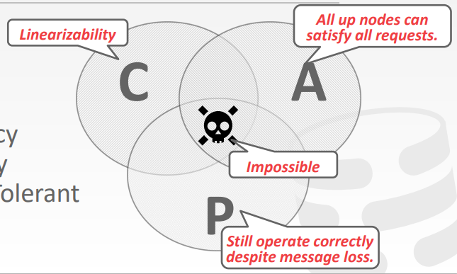为什么三者不能够同时实现？
比如说此时选择的是CP，那么在发生网络分区后
为了实现一致性和网络分区容忍性，我们就必须保证数据的读写都是在同一个数据中心上（一般名为Leader）
那么除去这个数据中心外的节点，就不能进行数据的读写，直到网络恢复后才能进行同步（违背了可用性）
或比如说此时选择的是AP，那么在发生网络分区后
为了实现一致性和可用性，就必须保证每个节点都是可以运行的（可以读写数据）
而网络的断开导致节点间无法同步数据，直到网络恢复后才能同步（违背了一致性）
再比如说此时选择的是CA，那么此时的方案就是每个数据节点都有单独的一份副本
数据更新的时候就需要通过网络进行同步
这可以保证一致性（都是从同一个节点读取数据）和可用性（每个节点都有数据）
但，因为数据不可以在节点间进行同步，导致系统不能够正常运行（违背了分区容错性）
Consistency
这里的一致性是强一致性（强调的是数据的正确性）
一旦数据写入到了系统中，就能够立刻在任何一个节点上读到这个数据（强调操作的可线性化）
要么读到正确的数据，要么就返回读取错误（不存在读取错误数据的情况）
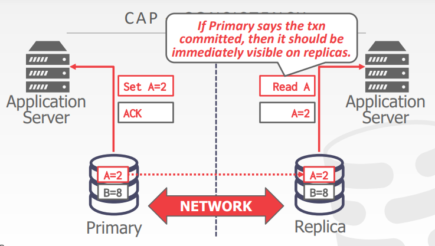Availability
高可用性（强调服务的可用性）
如果集群中的某个节点崩溃了，那么其他的应用节点依旧能够对外提供服务
DBMS一定会返回数据，但不保证数据的正确性和一致性
- 服务不会出错
- 服务必定会返回数据，但不保证数据的正确性
比如说这里的备用节点，在没崩溃之前都是访问备用节点的
备用节点崩溃后，应用可以访问主节点，使用上不受任何影响
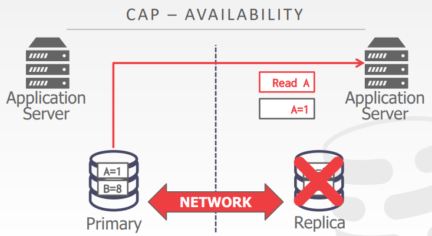和网络分区容忍性相比，可用性更加侧重的是某个节点崩溃后，系统是否可以提供服务
而网络分区容忍性，更加注重的是网络崩溃后，系统是否可以正常运作
Partition tolerance
网络分区容忍性（强调系统的正常运作）
如果发生了网络崩溃，节点之间不可通信（造成了网络分区）
在这种情况下，系统依然可以正常对外提供服务
比如以下这个例子，因为网络崩溃造成了网络分区

那如果两个应用各自向主节点Primary提交修改相同数据的事务
因为都是主节点，所以修改是可以成功的，即可用性得到解决，但是一致性上却无法同步

CAP for OLTP DBMS
对于传统型数据库，或者是NewSQL型数据库：
如果崩溃的节点数量达到一定的阈值，那么整个数据库就会直接下线，不对外提供服务
即牺牲可用性，以此保证一致性和分区容忍性（CP）
但是对于一些NoSQL型数据库来说，会在分区的集群重新连接以后
判断那些不一致的数据，选取其中一部分并保留下来
Federated databases
背景：
此前都假设分布式系统中的节点运行的都是相同的DBMS
但实际中可能是多种不同的DBMS同时使用
因此需要引入联邦数据库
但是，将多个DBMS连接在同一个分布式架构中，是一件非常困难的事情：
- 不同数据库的数据模型不同，同时也受查询语言的限制（SQL其实并不统一）
- 很难去实现查询的优化
- 大量的数据复制
一种较为好的方案就是利用PostgreSQL（Pg可以存储不同的数据模型）
利用Pg作为中间件（服务端），连接各个不同类型的数据库

还有一个在国内实践上比较多的办法：
因为国内很多企业用的都是MySQL
而很多数据库都可以识别MySQL的log（比如flink、spark）
那么可以让一些其他类型的数据库作为备节点
让MySQL的主节点源源不断的发送log给备节点，并在本地解析它
一个比较常用的场景：日常使用的是TP型数据库，而需要用AP型数据库对数据进行分析
那么就可以让AP型数据库作为备节点，让主节点的TP数据库不断的向它发送日志
还有一种场景：
就是需要检查某个数据是否发生了变化，那么就可以将数据同步到其他的DBMS中，实现监听
（或者使用数据库的触发器）
Conclusion
上述的很多方案都是基于数据库节点本身是友好的
而区块链数据库都假设每个节点都是恶意的、都是对抗性极大的
因此需要使用更加复杂的协议来提交事务，以此实现DBMS的正确运行